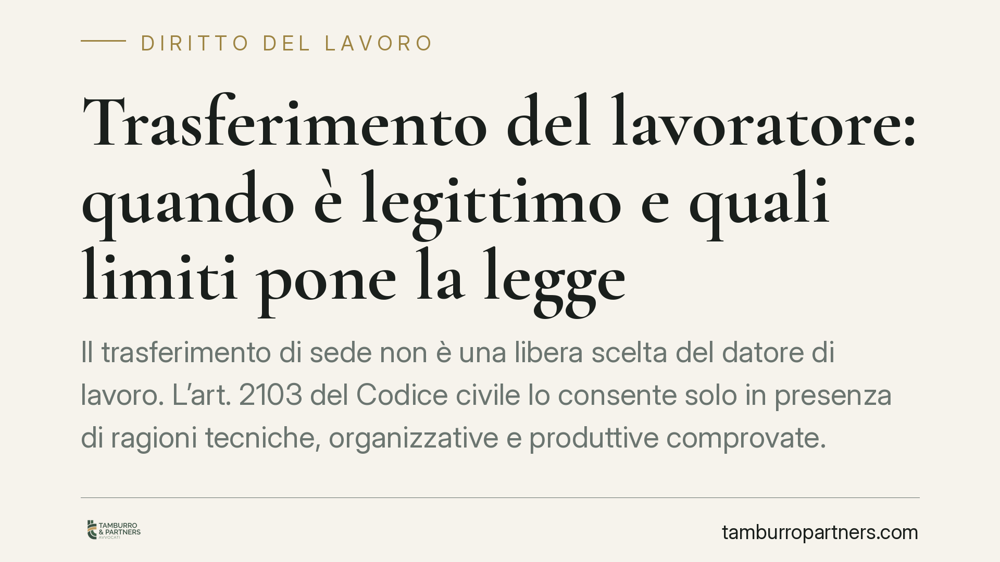

Trasferimento del lavoratore: quando è legittimo e quali limiti pone la legge
Il trasferimento di sede non è una libera scelta del datore di lavoro. L'art. 2103 del Codice civile lo consente solo in presenza di ragioni tecniche, organizzative e produttive comprovate. Capire dove passa il confine tra potere legittimo e abuso è decisivo per chi riceve una lettera di trasferimento e per chi la firma.

Il fatto e perché conta
Un trasferimento cambia la vita quotidiana di chi lavora: tempi di percorrenza, costi, equilibri familiari. Per questo la legge non lascia il datore di lavoro libero di spostare il personale a piacimento. Esiste un vincolo preciso, e sapere come funziona serve tanto al dipendente che intende contestare quanto all'impresa che vuole procedere senza esporsi a contenziosi.
Inquadramento normativo
La disciplina è contenuta nell'ultimo comma dell'art. 2103 del Codice civile: il lavoratore "non può essere trasferito da un'unità produttiva ad un'altra se non per comprovate ragioni tecniche, organizzative e produttive".
Due elementi meritano attenzione. Primo: il trasferimento in senso tecnico riguarda lo spostamento tra unità produttive diverse, cioè strutture aziendali dotate di autonomia (una sede, uno stabilimento, una filiale), non il semplice cambio di postazione all'interno dello stesso luogo. Secondo: le ragioni devono essere "comprovate", ossia effettive e dimostrabili, non pretestuose.
La Cassazione ha chiarito nel tempo che al giudice non spetta valutare l'opportunità della scelta imprenditoriale, ma verificare che esista un nesso reale tra l'esigenza organizzativa dichiarata e lo spostamento disposto. In altre parole, l'azienda non deve dimostrare che il trasferimento fosse l'unica soluzione possibile, ma che risponde a una necessità concreta e non a un intento ritorsivo o discriminatorio.
Restano ferme le tutele rafforzate previste da leggi speciali: si pensi ai limiti al trasferimento del lavoratore che assiste un familiare con disabilità grave (art. 33 della legge 104/1992) e alle protezioni riconosciute ai rappresentanti sindacali.
Implicazioni pratiche
Per il dipendente, il punto centrale è che il trasferimento privo di ragioni comprovate è illegittimo. Il lavoratore può contestarlo e, nei casi più gravi, chiedere il rientro nella sede originaria oltre al risarcimento del danno. Attenzione però: rifiutare di prendere servizio nella nuova sede prima di un accertamento giudiziale espone al rischio di contestazioni disciplinari. È una scelta delicata, da valutare con cautela.
Per il datore di lavoro, la lezione è opposta ma speculare: il provvedimento va costruito con una motivazione solida. Un trasferimento formalmente corretto ma privo di giustificazione documentabile è un provvedimento fragile, facilmente annullabile in giudizio, con conseguenze economiche significative.
Un nodo ricorrente riguarda la motivazione. La legge non impone al datore di indicare per iscritto le ragioni al momento del trasferimento, ma la giurisprudenza tende a valorizzare la trasparenza: se il lavoratore chiede spiegazioni, l'assenza di risposta o motivazioni tardive e mutevoli giocano a sfavore dell'azienda in un eventuale contenzioso.
Cosa fare in concreto
- Verificate la natura dello spostamento: accertate se si tratta davvero di un trasferimento tra unità produttive autonome o di un semplice cambio di postazione, perché la disciplina applicabile cambia.
- Chiedete la motivazione per iscritto: se siete il lavoratore, sollecitate formalmente le ragioni tecniche, organizzative e produttive; se siete il datore, mettetele nero su bianco fin dall'inizio.
- Controllate le tutele speciali: valutate la presenza di condizioni protette (legge 104, cariche sindacali, tutele legate alla genitorialità) che possono rendere il trasferimento illegittimo a prescindere dalle ragioni aziendali.
- Rispettate i termini prima di agire: consigliamo di non abbandonare il posto né di rifiutare la nuova sede senza un preventivo confronto legale, per non incorrere in addebiti disciplinari.
- Documentate tutto: conservate lettere, comunicazioni e circostanze temporali, utili a ricostruire l'eventuale carattere ritorsivo o pretestuoso del provvedimento.
La valutazione della legittimità di un trasferimento dipende sempre dai dettagli concreti del singolo caso. Prima di assumere iniziative, consigliamo un'analisi puntuale della documentazione e del contesto aziendale.
Disclaimer
Contributo informativo a cura di Tamburro & Partners - Avv. Giuseppe Tamburro. Non costituisce parere legale.
Ogni storia di lavoro ha i suoi tempi.
Se gestisci HR e vuoi un confronto su contenzioso, ispezioni o licenziamenti, scrivi allo studio. Ti rispondiamo entro un giorno lavorativo.